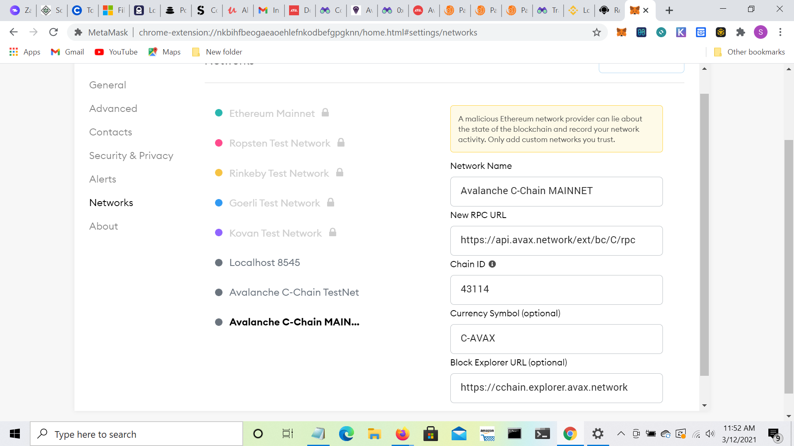
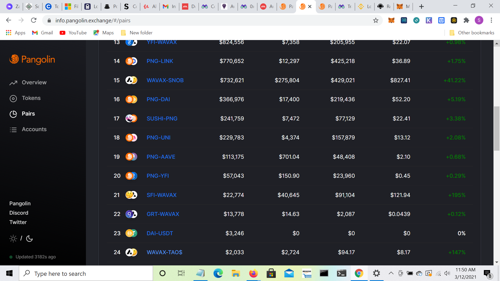

TAO Finance is a decentralized financial system on the Ethereum and Avalanche Network.
It consists of a stable currency TAO$ pegged to USD for deposits, liquidity pools and loans.
TAOX will be distributed to liquidity providers and depositors in the future with value determined by market.
The TAO$ App is being developed for Android and iPhone and browser.
We are now developing on the AVALANCHE C-BLOCKCHAIN. Low transaction costs and the ETH-AVX Bridge allows us to leverage both chains.
We already have a liquidity pool of AVAX / TAO$ on AVALANCHE which can be accessed using the Pangolin app with Metamask.
If TAO$ doesn't appear in coin list here's the contract 0xeB4E507a250F99B00a9EC0677156B250Ae719EAA
This a great time to add liquidity or swap for TAO$ because we are growing the pool and gradually stabilizing the TAO$ = 1 USD$.
When that is achieved the market driven governance token will be issued and TAO$ holders will receive a share.
ADD LIQUIDITY TO AVAX/TAO$ POOL
KUCOIN for low fees, ease of use, easy withdrawal

Here's the AVAX /TAO$ pool

On the Ethereum Blockchain TAO$ available at
Exchange almost anything for TAO$
If you don't see TAO$ on your token list, add it by entering the token contract address
0xac46bb2ef9331bd0747cd1bfde78663d2e338232
Add Liquidity to the Balancer TAO$ Pool and we'll match the TAO$ tokens deposited.
We've allocated 5000TAO$ for this promotion so do it now.
Your bonus TAO$ tokens will be sent directly to you in 15 days.
ADD LIQUIDITY to Balancer TAO$ Pool
SPECIAL OFFER for wallets that support ENS names
SEND ETH TO TAOFINANCE.ETH AND RECEIVE TAO$ AT THE RATE OF 9000TAO$ = 1ETH
Send the transaction ID to shiwu@tao.money and your TAO$ will be on the way with extra TAO$ to cover your transaction fee.
Shiwu Stonehouse, Chief Architect, TAO Labs
Email: shiwu@tao.money
Reddit: https://www.reddit.com/user/ShiwuStonehouse
Telegram: @TAODEFI
Instagram: #shiwustonehouse
Discord TAO.MONEY https://discord.gg/SvUweXT2ky